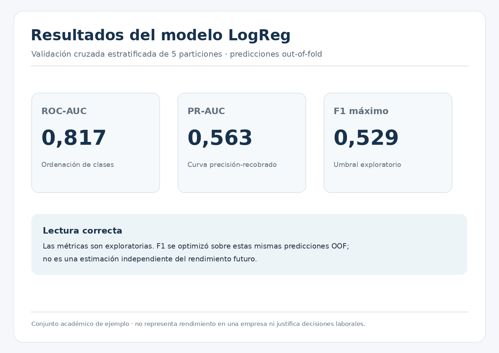
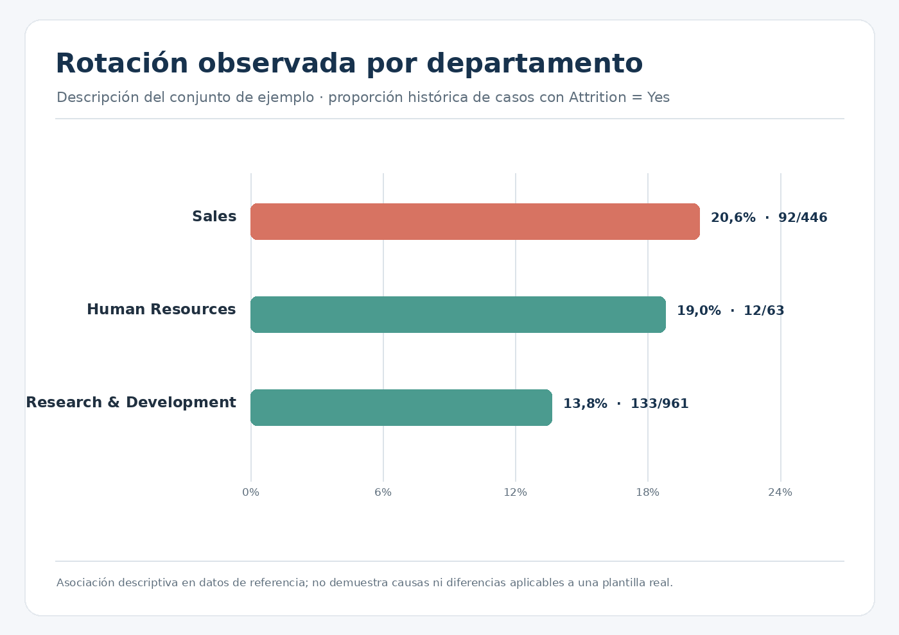

El proyecto integra datos tabulares, realiza controles de calidad y un ETL con PySpark, compara modelos de clasificación con scikit-learn y presenta algunos resultados en un prototipo de Power BI. El objetivo es demostrar un flujo de trabajo formativo, no medir impacto ni proponer decisiones de Recursos Humanos.
Docker Compose declara servicios locales de Jupyter, Spark Master y PostgreSQL. No hay un Worker configurado; el ETL utiliza Spark en modo local (`local[*]`) por defecto. La arquitectura sirve para aprender y reproducir el flujo en un entorno local, no representa una plataforma de producción.
El ETL prepara y combina los ficheros de ejemplo por `EmployeeNumber` y guarda el conjunto transformado en Parquet. Los notebooks cubren análisis exploratorio, modelado, métricas, visualización e informe final.
El fichero `WA_Fn-UseC_-HR-Employee-Attrition.csv` corresponde al conjunto que suele identificarse como IBM HR Analytics Employee Attrition & Performance. IBM utiliza un fichero con ese nombre en un tutorial de clasificación; la referencia ayuda a identificar el conjunto, pero no verifica por sí sola la licencia ni los derechos de esta copia incluida en el repositorio. Tutorial de IBM.
La fuente y licencia de redistribución de `encuesta_clima.csv` no se han podido recuperar. Sus distribuciones casi uniformes son compatibles con respuestas generadas para demostración, pero no prueban ese origen ni uno real. Esta memoria no atribuye procedencia. Antes de redistribuir el fichero fuera del contexto formativo, debe verificarse su fuente y licencia o sustituirse por datos con documentación clara.
Los resultados guardados mezclan una partición entrenamiento/prueba con predicciones out-of-fold de validación cruzada. No son una única comparación homogénea. En determinadas entradas OOF, el umbral y el F1 se optimizaron en esas mismas predicciones; por eso son exploratorios y no estiman de forma independiente el rendimiento futuro.
No se realizó validación temporal, calibración independiente, análisis formal de equidad ni validación para decisiones laborales. Las métricas versionadas son resultados históricos: se corrigió la alineación de umbrales en el código, pero no se pudo regenerar aquí el entrenamiento. Recalcula antes de citar sus valores como definitivos. Las tasas por segmento y los coeficientes describen patrones del conjunto de ejemplo. No demuestran causalidad ni se trasladan automáticamente a otra organización.

Métricas exploratorias del artefacto versionado. F1/umbral optimizados sobre las mismas predicciones OOF.
Las imágenes que acompañan esta memoria son gráficas de referencia recreadas a partir de datos y artefactos versionados en el repositorio. No son capturas verificadas de la aplicación Power BI. El PBIX se presenta como prototipo educativo y necesita una revisión en Power BI antes de atribuirle resultados a cada visualización.

Tasas descriptivas por departamento en el conjunto de ejemplo; no representan una plantilla real.
docker compose up -d --build y consultar los registros del servicio Jupyter para obtener su token temporal.Las dependencias de Machine Learning están expresadas como rangos compatibles, no como un lock de versiones exactas. La reproducción exacta entre equipos requiere fijar las versiones y verificar el entorno Docker.
Como proyecto de bootcamp, muestra experiencia práctica con integración de datos, ETL, clasificación, evaluación y visualización. Para presentarlo en el CV o en un expediente interno, conviene describirlo como proyecto educativo con datos de ejemplo y mantener explícitos los límites de sus resultados. No presentarlo como solución desplegada, validada o usada por la empresa.
Autora: Beatriz Velayos · Proyecto educativo de Big Data, Machine Learning e Inteligencia Artificial.